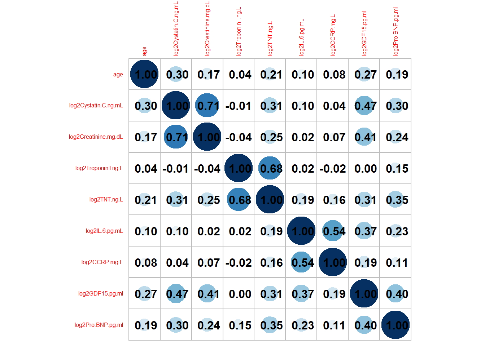
Transform Analysis
Linear and Logistic Regression (Weighted & Unweighted) and CART Analysis
Introduction
Brief Description: This document contains the results from the weighted linear and weighted logistic regressions and the CART analysis.
We want to test for changes in log2 Pro-BNP readings of patients from their baseline to the their 90 day follow-up visits. We do this with multiple linear regression models, where we utilize our calculated IPWs from our predicted and explanatory models and compare these findings with unweighted MLR models. We also present a weighted logistic regression model that tests whether the predicted log2 Pro-BNP at 90 day follow-up is less than 1000.
Finally, we performed a CART analysis using the function causalTree() from the htetree package.
Sections
Regression Models
Read-In Data and Libraries
EDA
Attaching package: 'Hmisc'The following object is masked from 'package:survey':
deffThe following objects are masked from 'package:dplyr':
src, summarizeThe following objects are masked from 'package:base':
format.pval, units
0 1
Furosemide 59 47
Torsemide 44 34# A tibble: 2 × 7
treatment_label N_unweighted n_under1000 prop_unweighted N_weighted
<fct> <int> <dbl> <dbl> <dbl>
1 Furosemide 106 47 0.443 261.
2 Torsemide 78 34 0.436 197.
# ℹ 2 more variables: n_weighted_under1000 <dbl>, prop_weighted <dbl>Warning in eval(family$initialize): non-integer #successes in a binomial glm!
Call:
glm(formula = followup_proBNP_under1000 ~ treatment_label, family = binomial(link = "logit"),
data = df_explanatory_IPWs, weights = combined_ipw)
Coefficients:
Estimate Std. Error z value Pr(>|z|)
(Intercept) -0.30745 0.12525 -2.455 0.0141 *
treatment_labelTorsemide 0.03483 0.19060 0.183 0.8550
---
Signif. codes: 0 '***' 0.001 '**' 0.01 '*' 0.05 '.' 0.1 ' ' 1
(Dispersion parameter for binomial family taken to be 1)
Null deviance: 625.90 on 183 degrees of freedom
Residual deviance: 625.87 on 182 degrees of freedom
AIC: 612.59
Number of Fisher Scoring iterations: 4
Call:
glm(formula = followup_proBNP_under1000 ~ treatment_label, family = binomial(link = "logit"),
data = df_explanatory_IPWs)
Coefficients:
Estimate Std. Error z value Pr(>|z|)
(Intercept) -0.22739 0.19551 -1.163 0.245
treatment_labelTorsemide -0.03044 0.30060 -0.101 0.919
(Dispersion parameter for binomial family taken to be 1)
Null deviance: 252.44 on 183 degrees of freedom
Residual deviance: 252.43 on 182 degrees of freedom
AIC: 256.43
Number of Fisher Scoring iterations: 3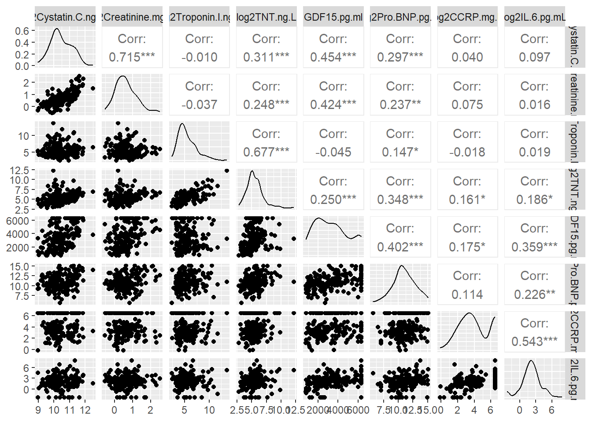
Linear (Weighted) Regression Models
Biomarker Specific Models
In these models, we keep the baseline NT-ProBNP as an x variable with the same response variable of the 90-day change in NT-ProBNP from baseline to followup visits, but we introduce the other biomarkers alone to the lm() 90-day models. Moreover, we keep all the race, sex, and age variables for all of these submodels. So, in total we have 7 models with the following structure:
Response: 90-day log2 NT-ProBNP change
Covariates: race, sex, age, and NT-ProBNP baseline reading
Model-specific covariates: baseline reading of a biomarker other than NT-ProBNP and the interaction of that biomarker with the baseline reading of NT-ProBNP
Log2 NT-ProBNP
Call:
lm(formula = log2proBNP_change ~ race + sex + age + log2Pro.BNP.pg.ml +
log2Pro.BNP.pg.ml * treatment_group, data = df_explanatory_IPWs,
weights = combined_ipw)
Weighted Residuals:
Min 1Q Median 3Q Max
-7.2188 -1.3724 0.2858 1.6930 6.3587
Coefficients:
Estimate Std. Error t value Pr(>|t|)
(Intercept) 3.173814 1.260391 2.518 0.01270 *
raceBlack 0.204091 0.560344 0.364 0.71613
raceCaucasian -0.011088 0.549434 -0.020 0.98392
raceOther 0.298596 0.595992 0.501 0.61700
sexMale 0.084416 0.260474 0.324 0.74626
age 0.030136 0.009701 3.107 0.00221 **
log2Pro.BNP.pg.ml -0.552638 0.091160 -6.062 8.04e-09 ***
treatment_group1 -3.505854 1.428230 -2.455 0.01508 *
log2Pro.BNP.pg.ml:treatment_group1 0.339500 0.127381 2.665 0.00841 **
---
Signif. codes: 0 '***' 0.001 '**' 0.01 '*' 0.05 '.' 0.1 ' ' 1
Residual standard error: 2.527 on 175 degrees of freedom
Multiple R-squared: 0.2149, Adjusted R-squared: 0.179
F-statistic: 5.986 on 8 and 175 DF, p-value: 8.641e-07Table 2 Info NT-ProBNP
Percentile Information for main biomarker in model (ProBNP): 25% 75%
1008.75 4968.25
Bootstrapped CI for 25th Percentile of main biomarker in model (ProBNP):[1] 747.349 1231.841
Bootstrapped CI for 75th Percentile of main biomarker in model (ProBNP):[1] 3682 6754
Predicted Change in NT-ProBNP Change at Given Percentile: fit lower.CI upper.CI
Furosemide (0) at 25% -269.72 -679.20 648.57
Torsemide (1) at 25% -327.86 -698.10 483.66
Furosemide (0) at 75% -3459.06 -4295.19 -1582.21
Torsemide (1) at 75% -2580.12 -3877.30 261.31Plot using the log2 scaling y-axis
Warning: Using `size` aesthetic for lines was deprecated in ggplot2 3.4.0.
ℹ Please use `linewidth` instead.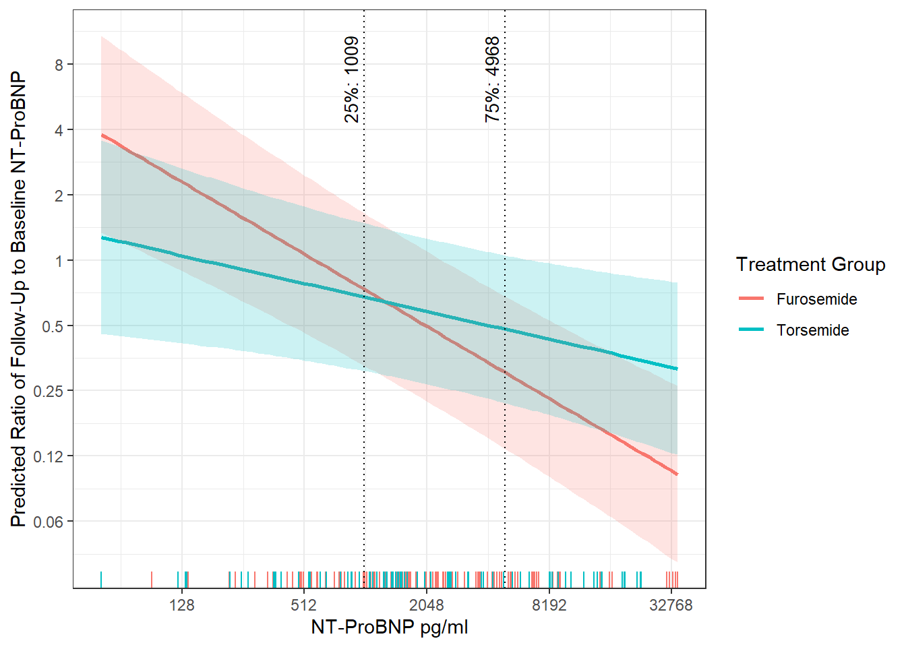
Plot using the log2 y-axis
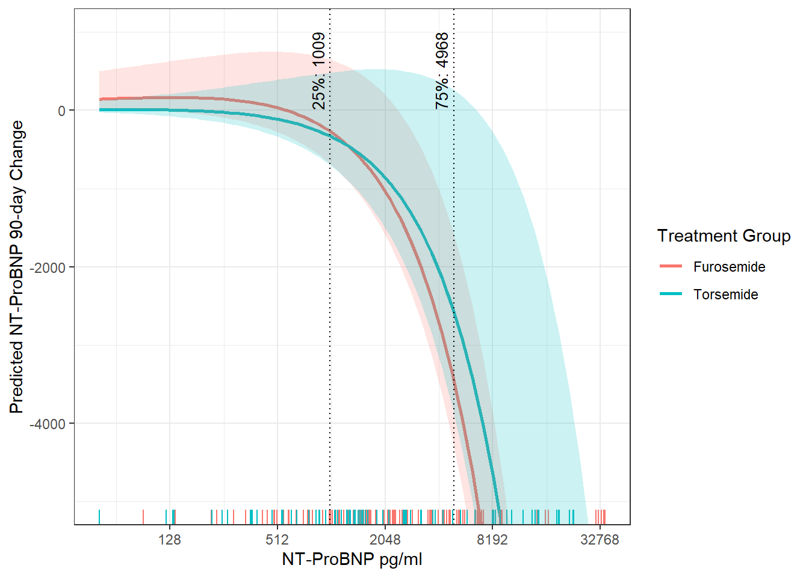
Log2 CCRP
Call:
lm(formula = log2proBNP_change ~ race + sex + age + log2Pro.BNP.pg.ml +
log2CCRP.mg.L * treatment_group + log2Pro.BNP.pg.ml * log2CCRP.mg.L,
data = df_explanatory_IPWs_noCCRP_outliers, weights = combined_ipw)
Weighted Residuals:
Min 1Q Median 3Q Max
-7.2585 -1.2869 0.2085 1.5461 6.4594
Coefficients:
Estimate Std. Error t value Pr(>|t|)
(Intercept) -0.502000 1.995726 -0.252 0.80170
raceBlack 0.189452 0.575134 0.329 0.74225
raceCaucasian 0.020929 0.566032 0.037 0.97055
raceOther 0.361448 0.612271 0.590 0.55573
sexMale 0.184236 0.272537 0.676 0.49994
age 0.030573 0.010012 3.054 0.00262 **
log2Pro.BNP.pg.ml -0.211913 0.159565 -1.328 0.18591
log2CCRP.mg.L 0.384251 0.393255 0.977 0.32988
treatment_group1 0.241510 0.601178 0.402 0.68838
log2CCRP.mg.L:treatment_group1 0.008125 0.137901 0.059 0.95308
log2Pro.BNP.pg.ml:log2CCRP.mg.L -0.039703 0.034518 -1.150 0.25164
---
Signif. codes: 0 '***' 0.001 '**' 0.01 '*' 0.05 '.' 0.1 ' ' 1
Residual standard error: 2.578 on 173 degrees of freedom
Multiple R-squared: 0.1919, Adjusted R-squared: 0.1452
F-statistic: 4.107 on 10 and 173 DF, p-value: 4.305e-05Table 2Info CCRP
Percentile Information for main biomarker in model (CCRP): 25% 75%
6.53 91.00
Bootstrapped CI for 25th Percentile of main biomarker in model (CCRP):[1] 5.31 8.41
Bootstrapped CI for 75th Percentile of main biomarker in model (CCRP):[1] 28.7375 91.0000
Predicted Change in NT-ProBNP Change at Given Percentile: fit lower.CI upper.CI
Furosemide (0) at 25% -1088.01 -1644.97 173.59
Torsemide (1) at 25% -888.18 -1549.75 590.74
Furosemide (0) at 75% -1219.16 -1735.80 61.33
Torsemide (1) at 75% -1023.11 -1650.50 509.68Plot using the log2 scaling y-axis

Plot using the transfromed original y-axis
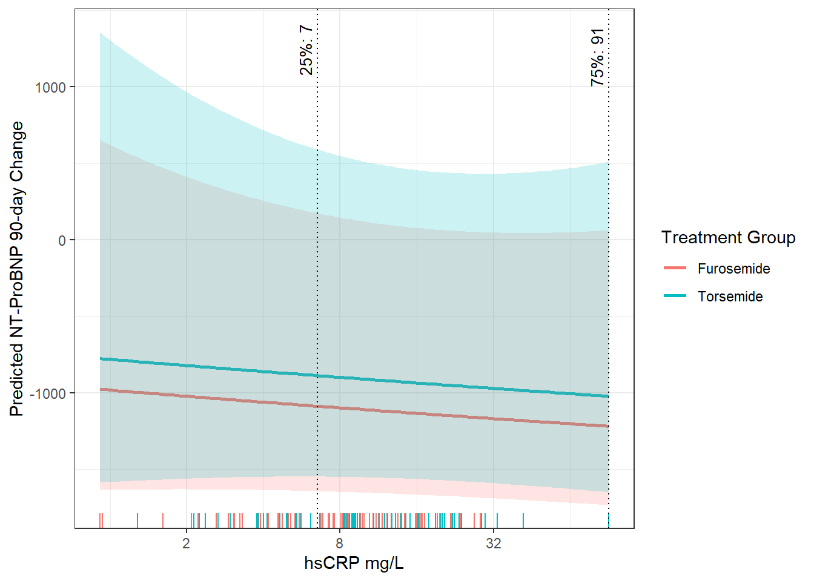
Log2 TNT
Call:
lm(formula = log2proBNP_change ~ race + sex + age + log2Pro.BNP.pg.ml +
log2TNT.ng.L * treatment_group + log2Pro.BNP.pg.ml * log2TNT.ng.L,
data = df_explanatory_IPWs, weights = combined_ipw)
Weighted Residuals:
Min 1Q Median 3Q Max
-7.0474 -1.2809 0.1774 1.6543 6.9936
Coefficients:
Estimate Std. Error t value Pr(>|t|)
(Intercept) -1.244304 3.510818 -0.354 0.72346
raceBlack 0.160500 0.572534 0.280 0.77956
raceCaucasian -0.033154 0.563848 -0.059 0.95318
raceOther 0.354815 0.610113 0.582 0.56162
sexMale 0.048032 0.271797 0.177 0.85994
age 0.029091 0.009985 2.914 0.00404 **
log2Pro.BNP.pg.ml -0.176347 0.296291 -0.595 0.55250
log2TNT.ng.L 0.533626 0.623825 0.855 0.39351
treatment_group1 -0.303389 1.153023 -0.263 0.79277
log2TNT.ng.L:treatment_group1 0.103047 0.208183 0.495 0.62124
log2Pro.BNP.pg.ml:log2TNT.ng.L -0.041850 0.052410 -0.799 0.42566
---
Signif. codes: 0 '***' 0.001 '**' 0.01 '*' 0.05 '.' 0.1 ' ' 1
Residual standard error: 2.58 on 173 degrees of freedom
Multiple R-squared: 0.1909, Adjusted R-squared: 0.1442
F-statistic: 4.083 on 10 and 173 DF, p-value: 4.671e-05Table 2Info TNT
Percentile Information for main biomarker in model (TNT): 25% 75%
25.6575 69.1625
Bootstrapped CI for 25th Percentile of main biomarker in model (TNT):[1] 21.82000 28.71214
Bootstrapped CI for 75th Percentile of main biomarker in model (TNT):[1] 62.94000 81.96676
Predicted Change in NT-ProBNP Change at Given Percentile: fit lower.CI upper.CI
Furosemide (0) at 25% -1060.293 -1630.993 227.445
Torsemide (1) at 25% -924.906 -1570.139 528.596
Furosemide (0) at 75% -984.232 -1608.416 457.063
Torsemide (1) at 75% -704.691 -1472.943 1027.515Plot using the log2 scaling y-axis
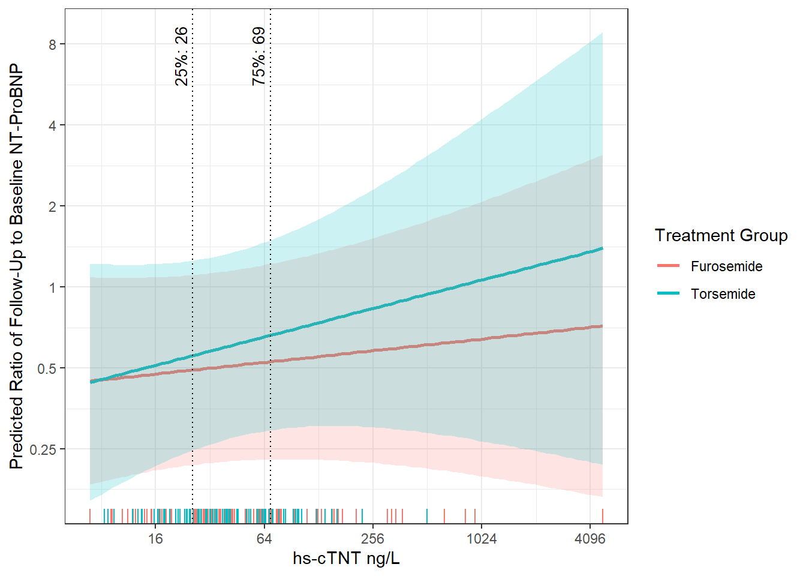
Plot using the transformed original y-axis
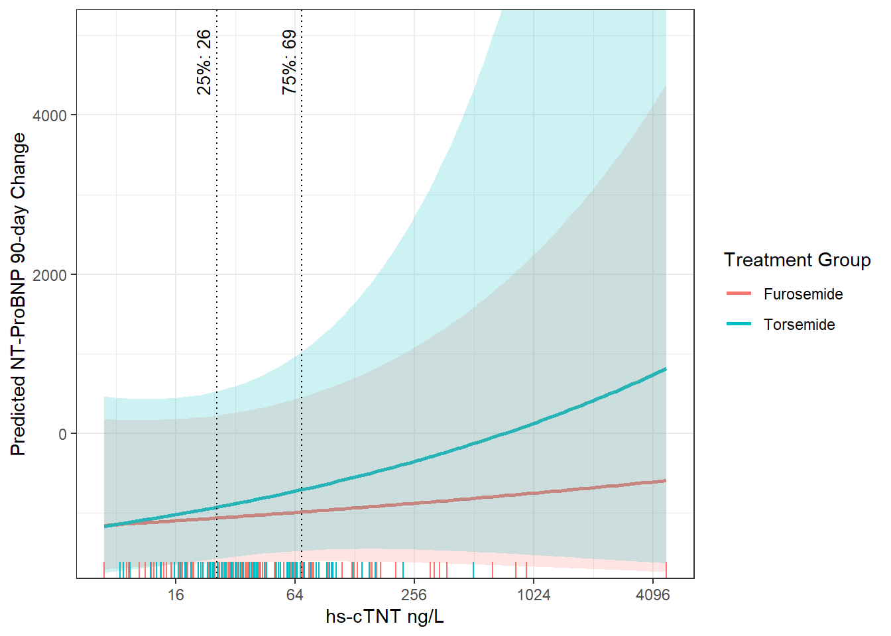
Log2 Troponin I
Call:
lm(formula = log2proBNP_change ~ as.factor(race) + as.factor(sex) +
age + log2Pro.BNP.pg.ml + log2Troponin.I.ng.L * treatment_group +
log2Pro.BNP.pg.ml * log2Troponin.I.ng.L, data = df_explanatory_IPWs,
weights = combined_ipw)
Weighted Residuals:
Min 1Q Median 3Q Max
-7.0685 -1.3269 0.2254 1.7713 6.8273
Coefficients:
Estimate Std. Error t value Pr(>|t|)
(Intercept) -1.373220 2.411844 -0.569 0.5698
as.factor(race)Black 0.128325 0.574721 0.223 0.8236
as.factor(race)Caucasian -0.069728 0.564551 -0.124 0.9018
as.factor(race)Other 0.331445 0.613714 0.540 0.5898
as.factor(sex)Male 0.059780 0.270562 0.221 0.8254
age 0.031701 0.009944 3.188 0.0017 **
log2Pro.BNP.pg.ml -0.176590 0.194711 -0.907 0.3657
log2Troponin.I.ng.L 0.496121 0.392848 1.263 0.2083
treatment_group1 1.020901 0.805082 1.268 0.2065
log2Troponin.I.ng.L:treatment_group1 -0.147104 0.141860 -1.037 0.3012
log2Pro.BNP.pg.ml:log2Troponin.I.ng.L -0.038825 0.033438 -1.161 0.2472
---
Signif. codes: 0 '***' 0.001 '**' 0.01 '*' 0.05 '.' 0.1 ' ' 1
Residual standard error: 2.578 on 173 degrees of freedom
Multiple R-squared: 0.1921, Adjusted R-squared: 0.1454
F-statistic: 4.114 on 10 and 173 DF, p-value: 4.213e-05Table 2 Info Troponin I
Percentile Information for main biomarker in model (Troponin I): 25% 75%
18.825 94.425
Bootstrapped CI for 25th Percentile of main biomarker in model (Troponin I):[1] 16.65127 21.42436
Bootstrapped CI for 75th Percentile of main biomarker in model (Troponin I):[1] 62.500 125.825
Predicted Change in NT-ProBNP Change at Given Percentile: fit lower.CI upper.CI
Furosemide (0) at 25% -1072.71 -1639.00 212.25
Torsemide (1) at 25% -751.05 -1499.03 951.35
Furosemide (0) at 75% -955.42 -1593.77 512.08
Torsemide (1) at 75% -910.60 -1556.57 524.66Plot using the log2 scaling y-axis
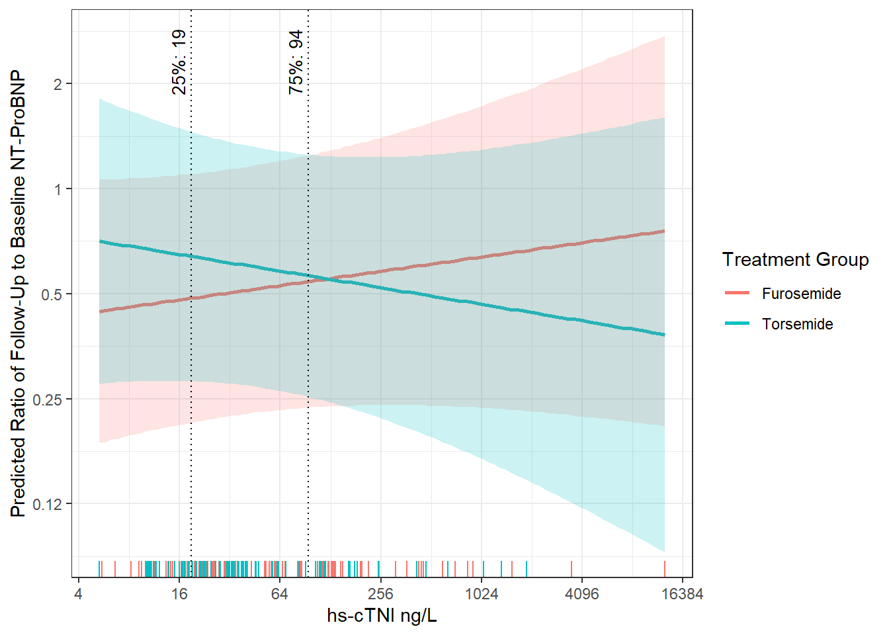
Plot using the transformed original y-axis
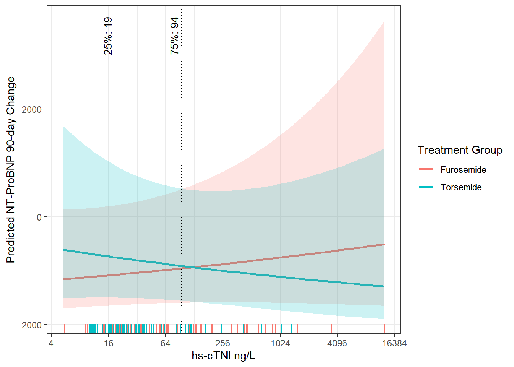
Log2 Creatinine
Call:
lm(formula = log2proBNP_change ~ as.factor(race) + as.factor(sex) +
age + log2Pro.BNP.pg.ml + log2Creatinine.mg.dL * treatment_group +
log2Pro.BNP.pg.ml * log2Creatinine.mg.dL, data = df_explanatory_IPWs,
weights = combined_ipw)
Weighted Residuals:
Min 1Q Median 3Q Max
-7.1929 -1.2243 0.1235 1.4974 8.1128
Coefficients:
Estimate Std. Error t value Pr(>|t|)
(Intercept) 3.127306 1.445535 2.163 0.03188
as.factor(race)Black 0.189325 0.541511 0.350 0.72705
as.factor(race)Caucasian 0.340300 0.535308 0.636 0.52581
as.factor(race)Other 0.612553 0.578729 1.058 0.29133
as.factor(sex)Male -0.131154 0.260117 -0.504 0.61475
age 0.027109 0.009713 2.791 0.00585
log2Pro.BNP.pg.ml -0.552101 0.114310 -4.830 2.99e-06
log2Creatinine.mg.dL -0.758251 1.361383 -0.557 0.57827
treatment_group1 -0.643457 0.349224 -1.843 0.06711
log2Creatinine.mg.dL:treatment_group1 1.091790 0.402154 2.715 0.00730
log2Pro.BNP.pg.ml:log2Creatinine.mg.dL 0.092319 0.111539 0.828 0.40899
(Intercept) *
as.factor(race)Black
as.factor(race)Caucasian
as.factor(race)Other
as.factor(sex)Male
age **
log2Pro.BNP.pg.ml ***
log2Creatinine.mg.dL
treatment_group1 .
log2Creatinine.mg.dL:treatment_group1 **
log2Pro.BNP.pg.ml:log2Creatinine.mg.dL
---
Signif. codes: 0 '***' 0.001 '**' 0.01 '*' 0.05 '.' 0.1 ' ' 1
Residual standard error: 2.432 on 173 degrees of freedom
Multiple R-squared: 0.2808, Adjusted R-squared: 0.2392
F-statistic: 6.754 on 10 and 173 DF, p-value: 7.607e-09Table 2 Info Creatinine
Percentile Information for main biomarker in model (Creatinine): 25% 75%
1.1450 1.9425
Bootstrapped CI for 25th Percentile of main biomarker in model (Creatinine):[1] 1.1100 1.2475
Bootstrapped CI for 75th Percentile of main biomarker in model (Creatinine):[1] 1.7725 2.2025
Predicted Change in NT-ProBNP Change at Given Percentile: fit lower.CI upper.CI
Furosemide (0) at 25% -1182.45 -1666.89 -137.00
Torsemide (1) at 25% -1415.23 -1781.25 -608.49
Furosemide (0) at 75% -1049.63 -1625.00 245.06
Torsemide (1) at 75% -716.49 -1440.88 822.26Plot using the log2 scaling y-axis

Plot using the transformed original y-axis
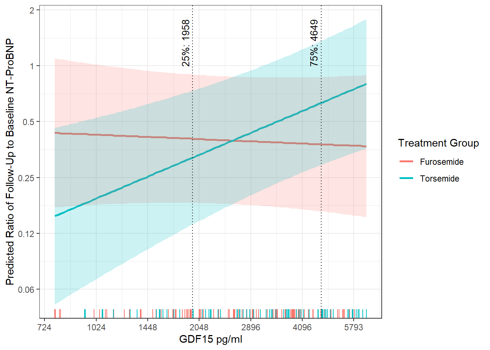
Log2 Cystatin C
Call:
lm(formula = log2proBNP_change ~ as.factor(race) + as.factor(sex) +
age + log2Pro.BNP.pg.ml + log2Cystatin.C.ng.mL * treatment_group +
log2Pro.BNP.pg.ml * log2Cystatin.C.ng.mL, data = df_explanatory_IPWs,
weights = combined_ipw)
Weighted Residuals:
Min 1Q Median 3Q Max
-6.8005 -1.3607 0.1446 1.4177 6.1891
Coefficients:
Estimate Std. Error t value Pr(>|t|)
(Intercept) 2.387091 11.929946 0.200 0.84164
as.factor(race)Black 0.452093 0.513060 0.881 0.37945
as.factor(race)Caucasian 0.571173 0.508376 1.124 0.26277
as.factor(race)Other 0.682892 0.545993 1.251 0.21272
as.factor(sex)Male 0.051205 0.238378 0.215 0.83017
age 0.016690 0.009347 1.786 0.07592
log2Pro.BNP.pg.ml -1.021289 1.006713 -1.014 0.31177
log2Cystatin.C.ng.mL 0.096367 1.129879 0.085 0.93213
treatment_group1 -10.735349 3.566644 -3.010 0.00300
log2Cystatin.C.ng.mL:treatment_group1 1.023492 0.339666 3.013 0.00297
log2Pro.BNP.pg.ml:log2Cystatin.C.ng.mL 0.047127 0.094239 0.500 0.61765
(Intercept)
as.factor(race)Black
as.factor(race)Caucasian
as.factor(race)Other
as.factor(sex)Male
age .
log2Pro.BNP.pg.ml
log2Cystatin.C.ng.mL
treatment_group1 **
log2Cystatin.C.ng.mL:treatment_group1 **
log2Pro.BNP.pg.ml:log2Cystatin.C.ng.mL
---
Signif. codes: 0 '***' 0.001 '**' 0.01 '*' 0.05 '.' 0.1 ' ' 1
Residual standard error: 2.3 on 173 degrees of freedom
Multiple R-squared: 0.357, Adjusted R-squared: 0.3198
F-statistic: 9.606 on 10 and 173 DF, p-value: 1.185e-12Table 2 Info CystatinC
Percentile Information for main biomarker in model (CystatinC): 25% 75%
1024.573 1959.566
Bootstrapped CI for 25th Percentile of main biomarker in model (CystatinC):[1] 961.8006 1101.1815
Bootstrapped CI for 75th Percentile of main biomarker in model (CystatinC):[1] 1785.545 2236.170
Predicted Change in NT-ProBNP Change at Given Percentile: fit lower.CI upper.CI
Furosemide (0) at 25% -1427.92 -1774.58 -694.39
Torsemide (1) at 25% -1620.31 -1867.08 -1094.39
Furosemide (0) at 75% -1105.21 -1618.15 -28.96
Torsemide (1) at 75% -739.19 -1423.66 653.46Plot using the log2 scaling y-axis
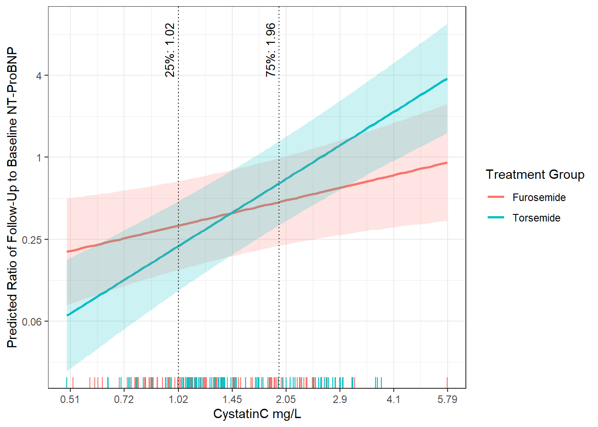
Plot using the transformed original y-axis
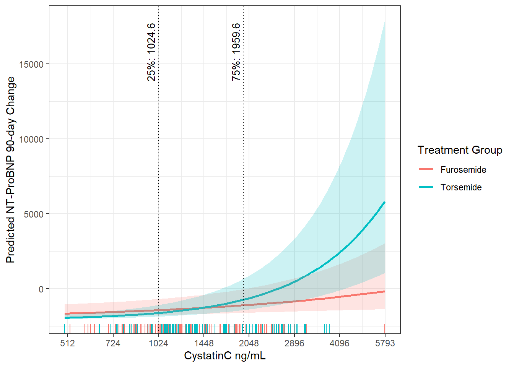
log2GDF15
Call:
lm(formula = log2proBNP_change ~ as.factor(race) + as.factor(sex) +
age + log2Pro.BNP.pg.ml + log2GDF15.pg.ml * treatment_group +
log2Pro.BNP.pg.ml * log2GDF15.pg.ml, data = df_explanatory_IPWs,
weights = combined_ipw)
Weighted Residuals:
Min 1Q Median 3Q Max
-7.3409 -1.3368 0.1932 1.5252 7.6427
Coefficients:
Estimate Std. Error t value Pr(>|t|)
(Intercept) 26.056120 10.686523 2.438 0.01577 *
as.factor(race)Black 0.341401 0.558153 0.612 0.54156
as.factor(race)Caucasian 0.298195 0.550738 0.541 0.58890
as.factor(race)Other 0.592096 0.594217 0.996 0.32043
as.factor(sex)Male 0.014116 0.259128 0.054 0.95662
age 0.027939 0.009781 2.856 0.00481 **
log2Pro.BNP.pg.ml -2.562415 0.991079 -2.585 0.01055 *
log2GDF15.pg.ml -2.100201 0.920705 -2.281 0.02376 *
treatment_group1 -9.769672 3.547582 -2.754 0.00652 **
log2GDF15.pg.ml:treatment_group1 0.862640 0.306209 2.817 0.00541 **
log2Pro.BNP.pg.ml:log2GDF15.pg.ml 0.183322 0.084462 2.170 0.03133 *
---
Signif. codes: 0 '***' 0.001 '**' 0.01 '*' 0.05 '.' 0.1 ' ' 1
Residual standard error: 2.486 on 173 degrees of freedom
Multiple R-squared: 0.2487, Adjusted R-squared: 0.2053
F-statistic: 5.727 on 10 and 173 DF, p-value: 2.088e-07Table 2 Info GDF15
Percentile Information for main biomarker in model (GDF15): 25% 75%
1957.930 4649.122
Bootstrapped CI for 25th Percentile of main biomarker in model (GDF15):[1] 1740.505 2204.244
Bootstrapped CI for 75th Percentile of main biomarker in model (GDF15):[1] 4024.932 5191.454
Predicted Change in NT-ProBNP Change at Given Percentile: fit lower.CI upper.CI
Furosemide (0) at 25% -1241.90 -1704.79 -215.80
Torsemide (1) at 25% -1417.40 -1794.26 -552.43
Furosemide (0) at 75% -1297.53 -1742.66 -273.97
Torsemide (1) at 75% -769.96 -1475.31 751.12Plot using the log2 scaling y-axis

Plot using the transformed original y-axis
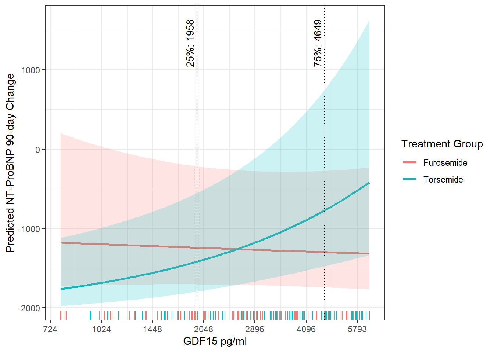
log2IL-6
Call:
lm(formula = log2proBNP_change ~ as.factor(race) + as.factor(sex) +
age + log2Pro.BNP.pg.ml + log2IL.6.pg.mL * treatment_group +
log2Pro.BNP.pg.ml * log2IL.6.pg.mL, data = df_explanatory_IPWs,
weights = combined_ipw)
Weighted Residuals:
Min 1Q Median 3Q Max
-7.3208 -1.2321 0.1835 1.5791 7.5757
Coefficients:
Estimate Std. Error t value Pr(>|t|)
(Intercept) 9.794e-01 1.436e+00 0.682 0.49598
as.factor(race)Black 1.479e-01 5.721e-01 0.259 0.79626
as.factor(race)Caucasian -6.214e-05 5.626e-01 0.000 0.99991
as.factor(race)Other 3.219e-01 6.090e-01 0.529 0.59780
as.factor(sex)Male 9.876e-02 2.687e-01 0.368 0.71365
age 2.883e-02 9.993e-03 2.885 0.00442 **
log2Pro.BNP.pg.ml -3.374e-01 1.071e-01 -3.149 0.00193 **
log2IL.6.pg.mL 1.939e-01 4.230e-01 0.458 0.64724
treatment_group1 -8.477e-02 3.818e-01 -0.222 0.82455
log2IL.6.pg.mL:treatment_group1 1.591e-01 1.388e-01 1.147 0.25303
log2Pro.BNP.pg.ml:log2IL.6.pg.mL -2.186e-02 3.637e-02 -0.601 0.54855
---
Signif. codes: 0 '***' 0.001 '**' 0.01 '*' 0.05 '.' 0.1 ' ' 1
Residual standard error: 2.58 on 173 degrees of freedom
Multiple R-squared: 0.1911, Adjusted R-squared: 0.1444
F-statistic: 4.088 on 10 and 173 DF, p-value: 4.59e-05Table 2 Info IL-6
Percentile Information for main biomarker in model (IL-6): 25% 75%
2.275 8.225
Bootstrapped CI for 25th Percentile of main biomarker in model (IL-6):[1] 1.700 2.925
Bootstrapped CI for 75th Percentile of main biomarker in model (IL-6):[1] 6.800 9.925
Predicted Change in NT-ProBNP at Given Percentile: fit lower.CI upper.CI
Furosemide (0) at 25% -1032.95 -1621.31 301.62
Torsemide (1) at 25% -954.36 -1577.47 433.46
Furosemide (0) at 75% -1094.78 -1649.31 165.16
Torsemide (1) at 75% -779.28 -1497.25 815.41Plot using the log2 scaling y-axis
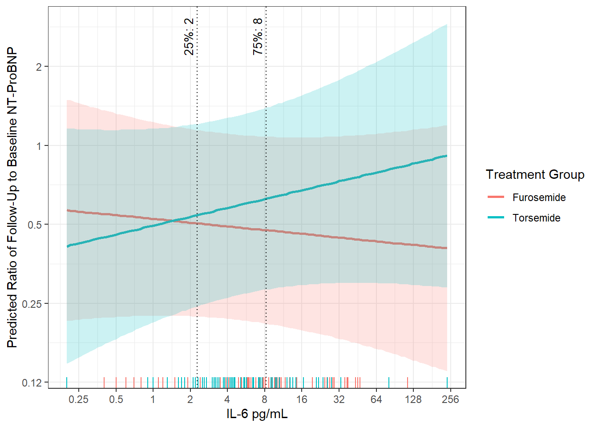
Plot using the transformed original y-axis
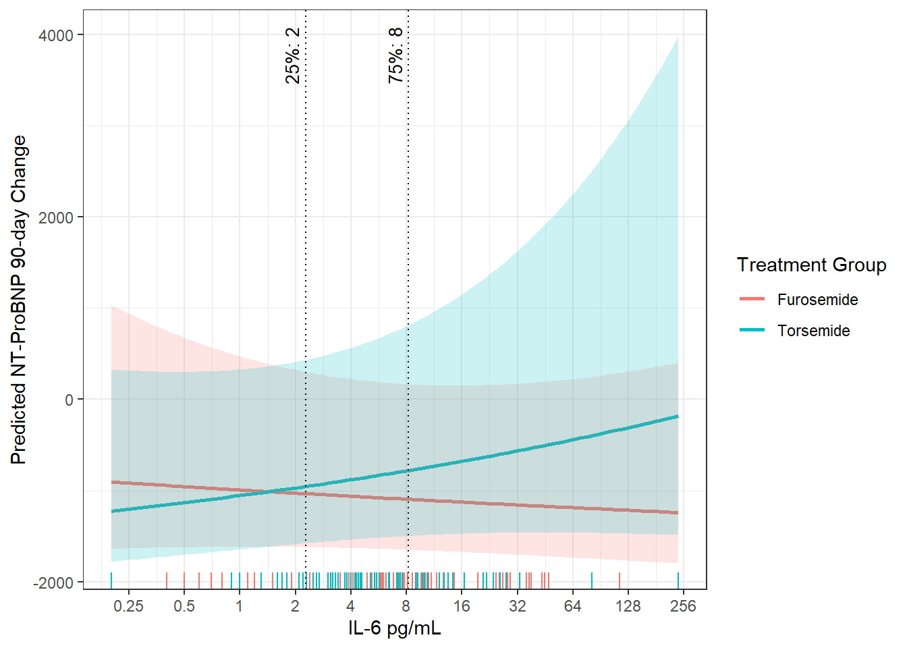
Figure 2A: Transformed Original Scaling
This is the file Chris and collaborators wants
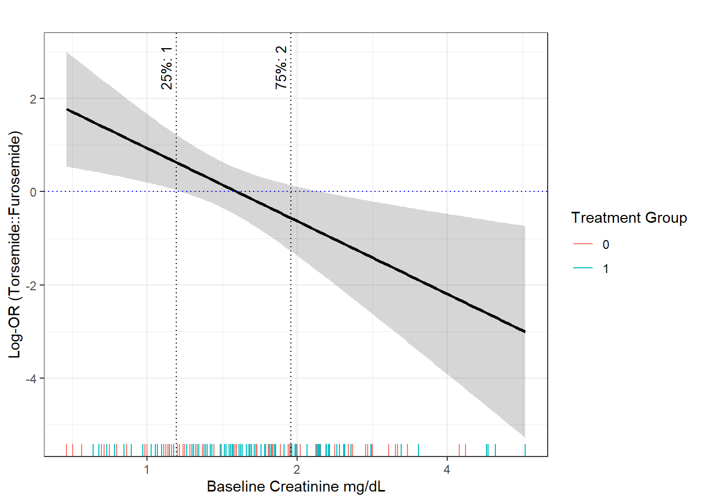
Figure 2A: Transformed Original Scaling
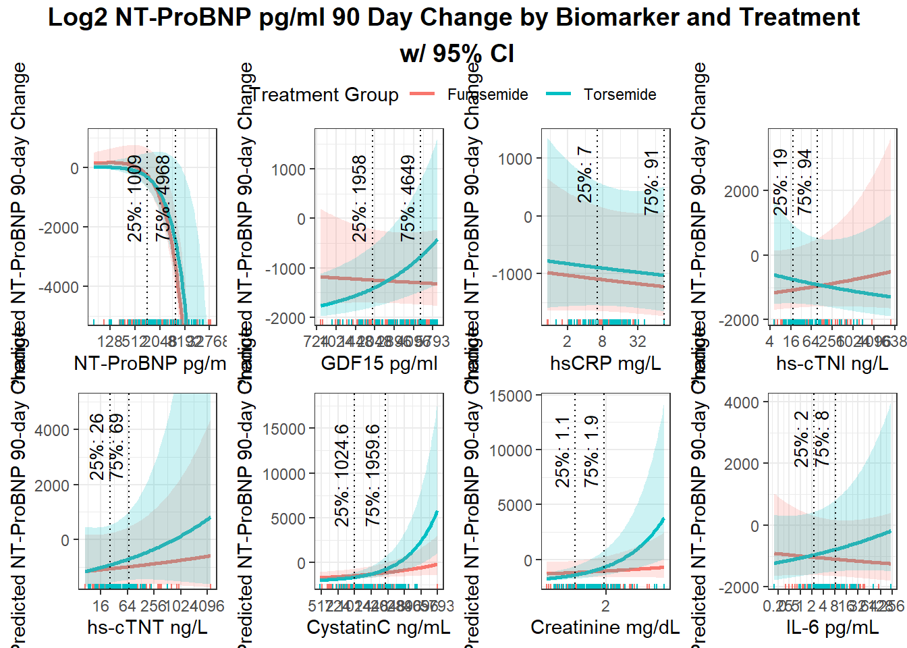
Logistic (Weighted) Regression Models
Biomarker Specific
Attaching package: 'modelsummary'The following object is masked from 'package:Hmisc':
MeanLog2 Nt-proBNP
Create a model that is identical to the one used in the lm setting.
Table 3 Info NT-proBNP
OR at 25%: 25%
1.91
OR at 75%: 75%
0.22
CI for OR at 25%:[1] 1.05 3.47
CI for OR at 75%:[1] 0.09 0.55
p-values for table 3: Estimate Std. Error z value Pr(>|z|)
log2Pro.BNP.pg.ml -0.481489 0.09307373 -5.173200 2.3000e-07
log2Pro.BNP.pg.ml:treatment_group1 -0.936942 0.23557574 -3.977243 6.9719e-05Plot
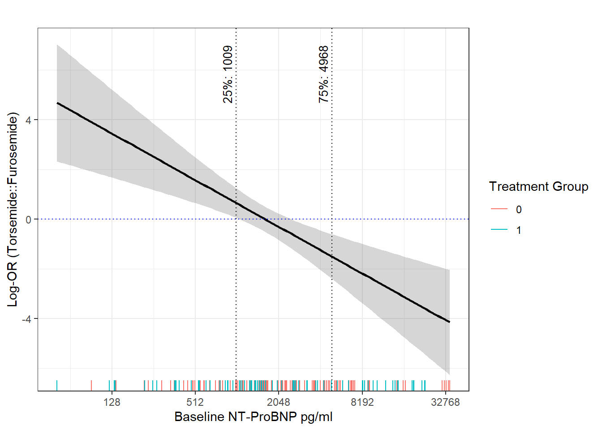
Log2 CCRP
Create a model that is identical to the one used in the lm() setting.
Table 3 Info
OR at 25%:0.99
CI for OR at 25%:0.57 1.74
OR at 75%:0.81
CI for OR at 75%:0.36 1.82
p-values used in table 3: Estimate Std. Error z value Pr(>|z|)
log2CCRP.mg.L -0.4670376 0.5038070 -0.9270169 0.3539178
log2CCRP.mg.L:treatment_group1 -0.0523485 0.1325388 -0.3949673 0.6928670Plot

Log2 TNT
Create a model that is identical to the one used in the lm setting.
Table 3 Info
OR at 25%:1.07
CI for OR at 25%:0.63 1.83
OR at 75%:0.75
CI for OR at 75%:0.42 1.33
p-values used in table 3: Estimate Std. Error z value Pr(>|z|)
log2TNT.ng.L -0.9743779 0.7889617 -1.235013 0.2168257
log2TNT.ng.L:treatment_group1 -0.2503266 0.2147535 -1.165646 0.2437574Plot
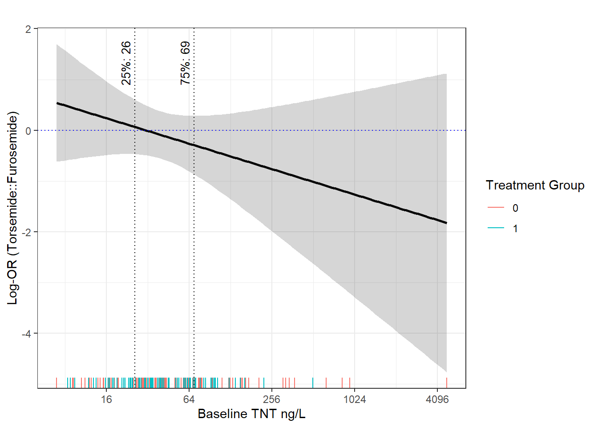
Log2 Troponin I
Create a model that is identical to the one used in the lm setting.
Table 3 Info
OR at 25%:0.77
CI for OR at 25%:0.44 1.36
OR at 75%:1.18
CI for OR at 75%:0.69 2.02
p-values used in table 3: Estimate Std. Error z value
log2Troponin.I.ng.L -1.1780300 0.4536941 -2.596529
log2Troponin.I.ng.L:treatment_group1 0.1848149 0.1308613 1.412297
Pr(>|z|)
log2Troponin.I.ng.L 0.009417089
log2Troponin.I.ng.L:treatment_group1 0.157862604Plot
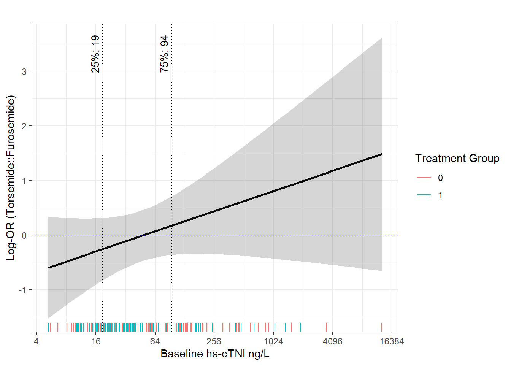
Log2 Creatinine
Create a model that is identical to the one used in the lm setting.
Table 3 Info
OR at 25%:1.87
CI for OR at 25%:1.04 3.39
OR at 75%:0.57
CI for OR at 75%:0.28 1.15
p-values used in table 3: Estimate Std. Error z value
log2Creatinine.mg.dL 2.824993 2.0976780 1.346724
log2Creatinine.mg.dL:treatment_group1 -1.564129 0.5589635 -2.798266
Pr(>|z|)
log2Creatinine.mg.dL 0.178069245
log2Creatinine.mg.dL:treatment_group1 0.005137774Plot

Log2 Cystatin C
Create a model that is identical to the one used in the lm setting.
Table 3 Info
OR at 25%:2.1
CI for OR at 25%:1.14 3.89
OR at 75%:0.5
CI for OR at 75%:0.22 1.1
p-values used in table 3: Estimate Std. Error z value Pr(>|z|)
log2Cystatin.C.ng.mL 3.888292 1.9156217 2.029781 0.04237883
log2Cystatin.C.ng.mL:treatment_group1 -1.545918 0.5111541 -3.024368 0.00249153Plot

Log2 GDF15
Create a model that is identical to the one used in the lm setting.
Table 3 Info
OR at 25%:1.66
CI for OR at 25%:0.92 3.02
OR at 75%:0.38
CI for OR at 75%:0.19 0.77
p-values used in table 3: Estimate Std. Error z value Pr(>|z|)
log2GDF15.pg.ml 2.876133 1.2201513 2.357194 0.018413641
log2GDF15.pg.ml:treatment_group1 -1.189202 0.3386019 -3.512096 0.000444588Plot
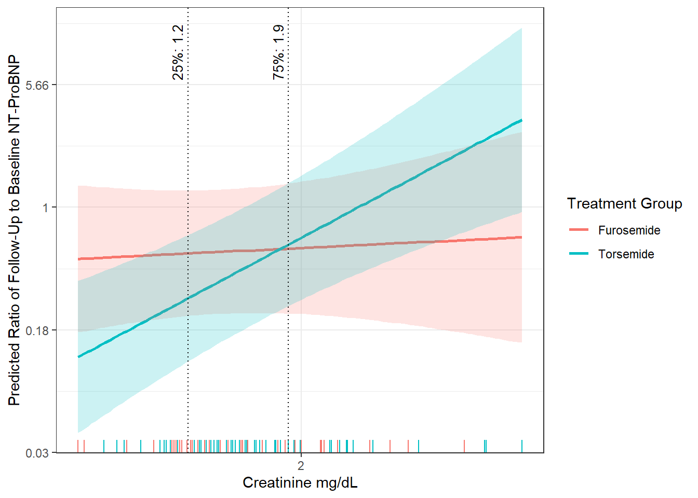
Log2 IL-6
Create a model that is identical to the one used in the lm setting.
Table 3 Info
OR at 25%:1.06
CI for OR at 25%:0.64 1.77
OR at 75%:0.75
CI for OR at 75%:0.43 1.32
p-values used in table 3: Estimate Std. Error z value Pr(>|z|)
log2IL.6.pg.mL -0.1014385 0.5488330 -0.1848259 0.8533656
log2IL.6.pg.mL:treatment_group1 -0.1860512 0.1438137 -1.2936962 0.1957704Plot
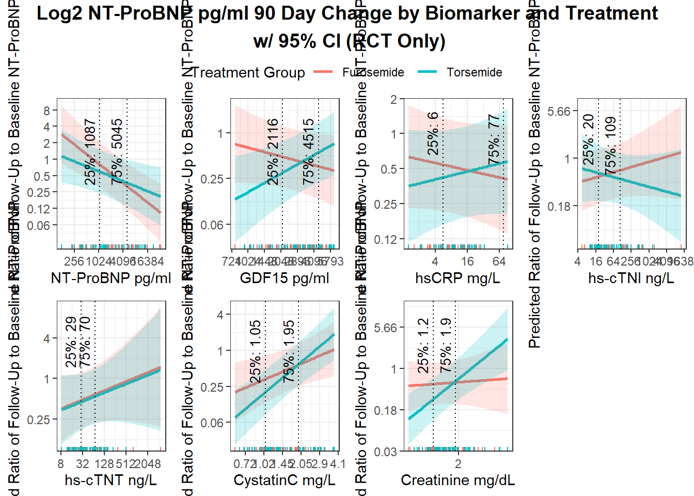
Figure: Log-Odds Ratio
This is a file Chris wants for the publication

CART Analysis
Warning: package 'htetree' was built under R version 4.3.3Interpretating the Tree
In the log2 scaling, leaf nodes are interpreted as:
\[ [log2[FollowUp\_Tors] - log2[Baseline\_Tors]] - [log2[FollowUp\_Fur] - log2[Baseline\_Fur]] \]
In this scaling, a negative value means Torsemide is better and a positive value means Furosemide is better at reducing log2 NT-proBNP pg/ml from baseline to followup.
For undone log2 Transform, leaf nodes are interpreted as:
\[ \frac{\frac{FollowUp\_Tors}{Baseline\_Tors}}{\frac{FollowUp\_Fur}{Baseline\_Fur}} \]
In this scaling, a value less than 1 means Torsemide is better and a value greater than 1 means Furosemide is better at reducing log2 NT-proBNP pg/ml from baseline to followup.
The plots are shown in the undone log2 Transform unless specified.
Note for Dr.Bruce:
Some of the models are able to take in proBNP instead of log2probnp and not result in a different tree but lets us view the results in the undone log2 transform. However, the first tree actually produces a different tree. So, a workaround will be needed for that transformation for the labels.
Tree 1
model: log2proBNP_change ~ sex + race + as.numeric(age) + log2Pro.BNP.pg.ml
Results of Tree 1
Results not Transformed to undone log2
This tree is tuned accordingly for the amount of data and is the tree from a statistics standpoint is the most sound out of the other trees produced in this document.
[1] -29108 -33497 -33822 13079 17669 27525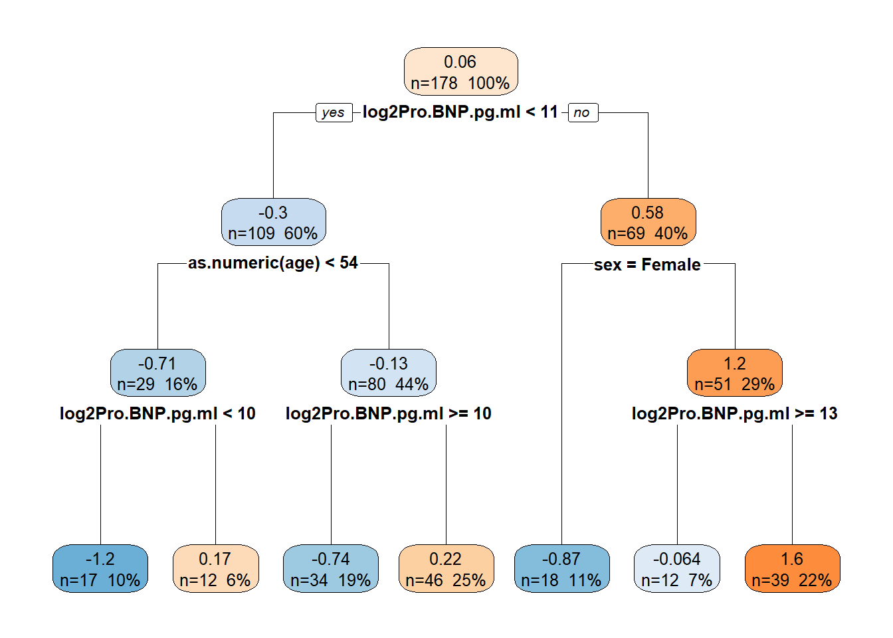
Regression tree:
causalTree(formula = log2proBNP_change ~ sex + race + as.numeric(age) +
log2Pro.BNP.pg.ml, data = df_explanatory_IPWs, weights = df_explanatory_IPWs$combined_ipw,
treatment = df_explanatory_IPWs$treatment_group, split.Rule = "CT",
split.Honest = TRUE, split.Bucket = TRUE, bucketNum = 6,
cv.option = "CT", cv.Honest = TRUE, minsize = 10, minsplit = 25,
xval = 5, maxdepth = 3)
Variables actually used in tree construction:
[1] as.numeric(age) log2Pro.BNP.pg.ml sex
Root node error: 65106/178 = 365.76
n= 178
CP nsplit rel error xerror xstd
1 0.00074780 0 1.00000 1.00000 0.00010460
2 0.00058026 2 0.99850 0.99885 0.00037792
3 0.00011906 3 0.99792 0.99839 0.00045195
4 0.00000000 6 0.99757 0.99810 0.00045204Interpretation: if the value in the leaf nodes is <0, then Torsemide is better. If >0, then Furosemide is better. This tree will need to be transformed by hand and labels put on separately due to age not needing a transformation.
Tree 1b (Not using log2 in the model)
model: proBNP_change ~ sex + race + as.numeric(age) + Pro.BNP.pg.ml
Results of Tree 1b
Interpretation is straightforward for this tree as no logs are present in the model. If 0 then no difference between the meds. If positive value, then Furosemide is better by that predicted amount; if negative Torsemide is better by that predicted amount.
The xstd for this type of model is larger, so be careful choosing this one until more tuning is done.
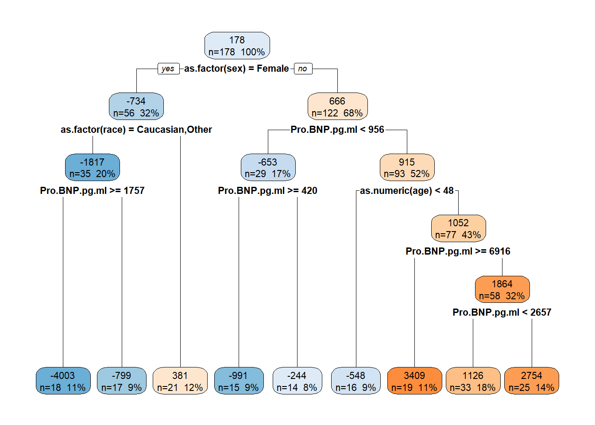
Regression tree:
causalTree(formula = proBNP_change ~ as.factor(sex) + as.factor(race) +
as.numeric(age) + Pro.BNP.pg.ml, data = df_explanatory_IPWs,
weights = combined_ipw, treatment = df_explanatory_IPWs$treatment_group,
split.Rule = "CT", split.Honest = TRUE, split.Bucket = TRUE,
bucketNum = 6, cv.option = "CT", cv.Honest = TRUE, minsize = 15,
minsplit = 25, xval = 5, maxdepth = 5)
Variables actually used in tree construction:
[1] as.factor(race) as.factor(sex) as.numeric(age) Pro.BNP.pg.ml
Root node error: 5.8607e+11/178 = 3292528045
n= 178
CP nsplit rel error xerror xstd
1 1.8245e-04 0 1.00000 1.00000 0.00012083
2 1.9038e-05 6 0.99891 0.99812 0.00057984
3 7.4976e-06 7 0.99889 0.99801 0.00057920
4 0.0000e+00 8 0.99888 0.99799 0.00057906Tree 1c: Extension-Study Only
model: log2proBNP_change ~ sex + race + as.numeric(age) + log2Pro.BNP.pg.ml
Results Tree 1c
Results not Transformed to undone log2
This uses the same formula from the first Tree 1 above but only looks at the Extension study. The arguments were tuned according to the now 88 patients in this analysis.
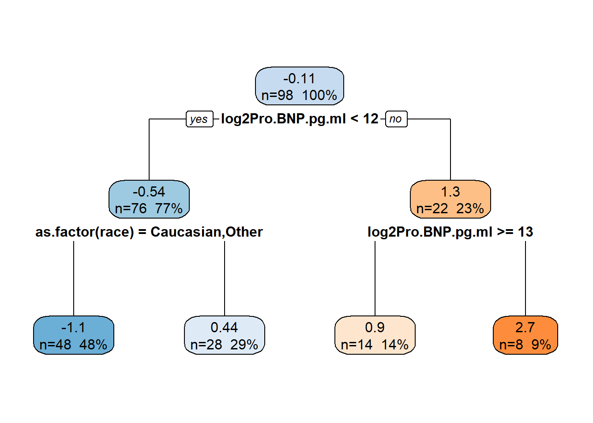
Tree 2: log2ProBNP and log2Cystatin
model: log2proBNP_change ~ log2Cystatin.C.ng.mL + log2Pro.BNP.pg.ml
Warning: This one no further splits were even possible. This is lowering all possible minimum sizes for leaves etc.. This is to the point it is overfit.
Results not Transformed to undone log2
Warning: labs do not fit even at cex 0.15, there may be some overplotting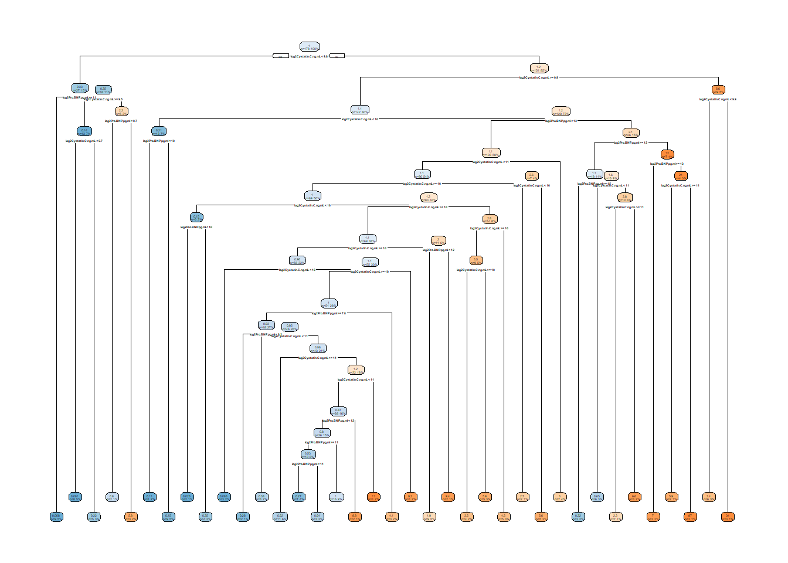
Tree 3: log2ProBNP and log2Creatinine
Warning: This one no further splits were even possible. This is lowering all possible minimum sizes for leaves etc.. This is to the point it is overfit.
Results not Transformed to undone log2
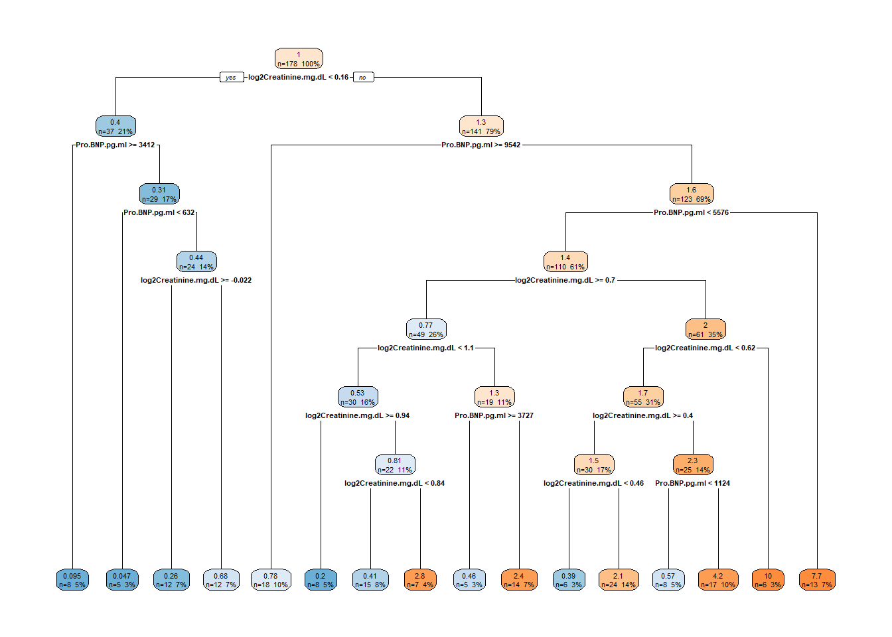
In interpretation of the last plot: If the resulting leaf is \(< 1\) then treatment group 1 (Torsemide) is predicted to be more effective in reducing NT-proBNP. If \(> 1\) then treatment group 0 (Furosemide) is more effective in reducing NT-proBNP.
Tree 4: log2ProBNP, log2CystatinC, and log2GDF15
model:
log2proBNP_change ~ log2Pro.BNP.pg.ml + log2Cystatin.C.ng.mL + log2GDF15.pg.ml
This tree has no splits no matter what arguments are tried. (I tried 50+ combinations that should help produce splits, even to produce overfit trees and nothing helped. I even removed the seed for reproducibility and never saw a single split.)
Results not Transformed to undone log2
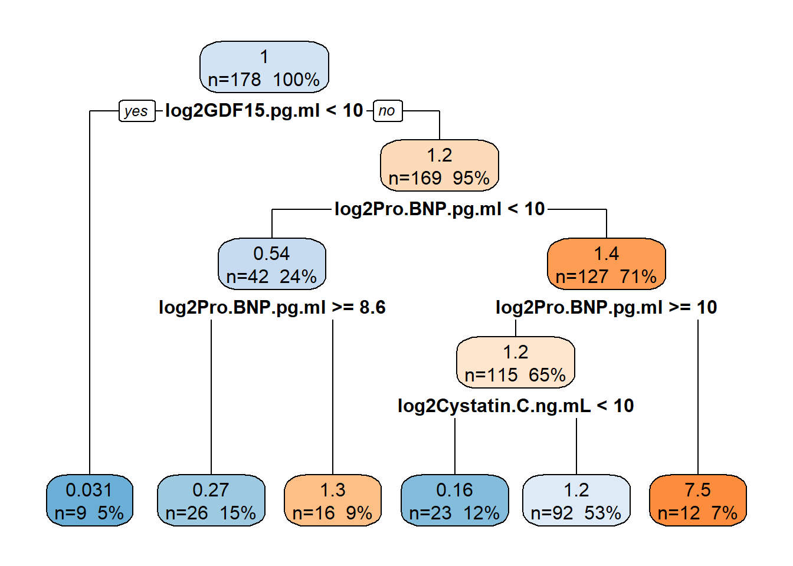
Tree 5: log2ProBNP Only
Again the tree is at the lowest values it can be given for allowing splits.
Results not Transformed to undone log2
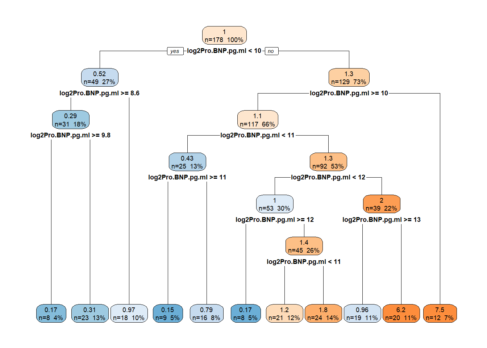
Importance Plots and Tertile Plots (Causal Forest)
Fot the Importance plots and tertile plots below they were created from running causal_forest() on the following variables given weights and treatment groups: “log2Pro.BNP.pg.ml”, “log2CCRP.mg.L”, “log2Creatinine.mg.dL”, “log2Cystatin.C.ng.mL”, “log2Troponin.I.ng.L”, “log2TNT.ng.L”, “log2GDF15.pg.ml”,“log2IL.6.pg.mL”. This method can only take in values that are numeric. This is why only the biomarkers were fed in.
log2GDF15.pg.ml log2Creatinine.mg.dL log2Pro.BNP.pg.ml
0.16148901 0.13498547 0.13124681
log2Cystatin.C.ng.mL log2TNT.ng.L log2IL.6.pg.mL
0.12575471 0.12035112 0.11001084
log2Troponin.I.ng.L log2CCRP.mg.L
0.09619600 0.07606359 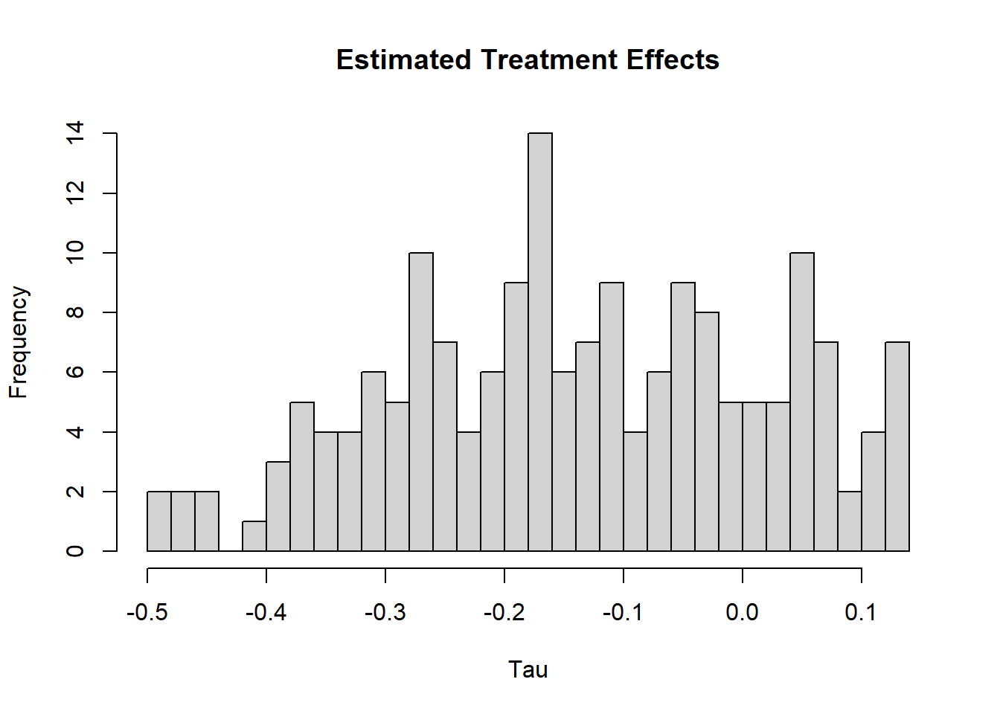
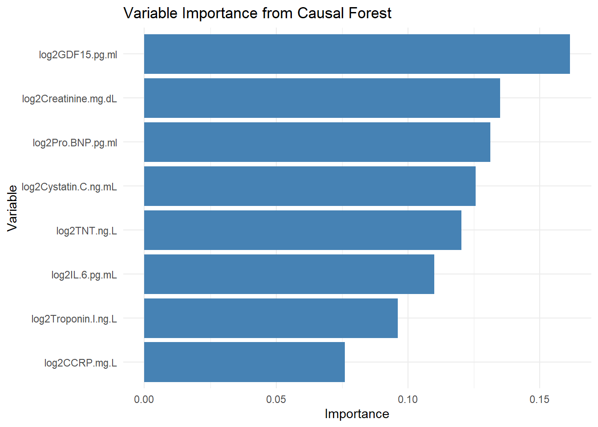
Warning: <ggplot> %+% x was deprecated in ggplot2 4.0.0.
ℹ Please use <ggplot> + x instead.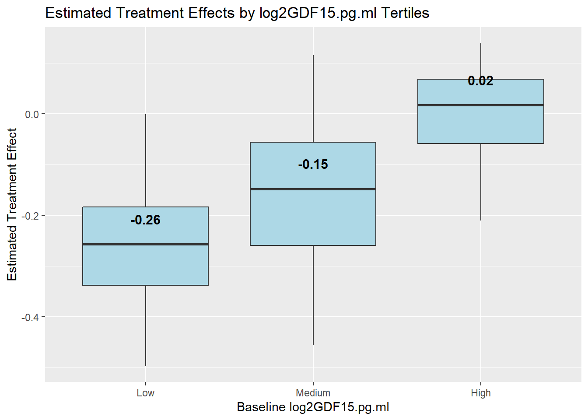
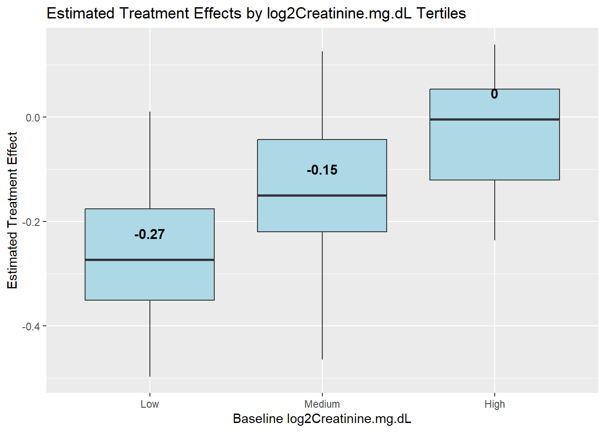
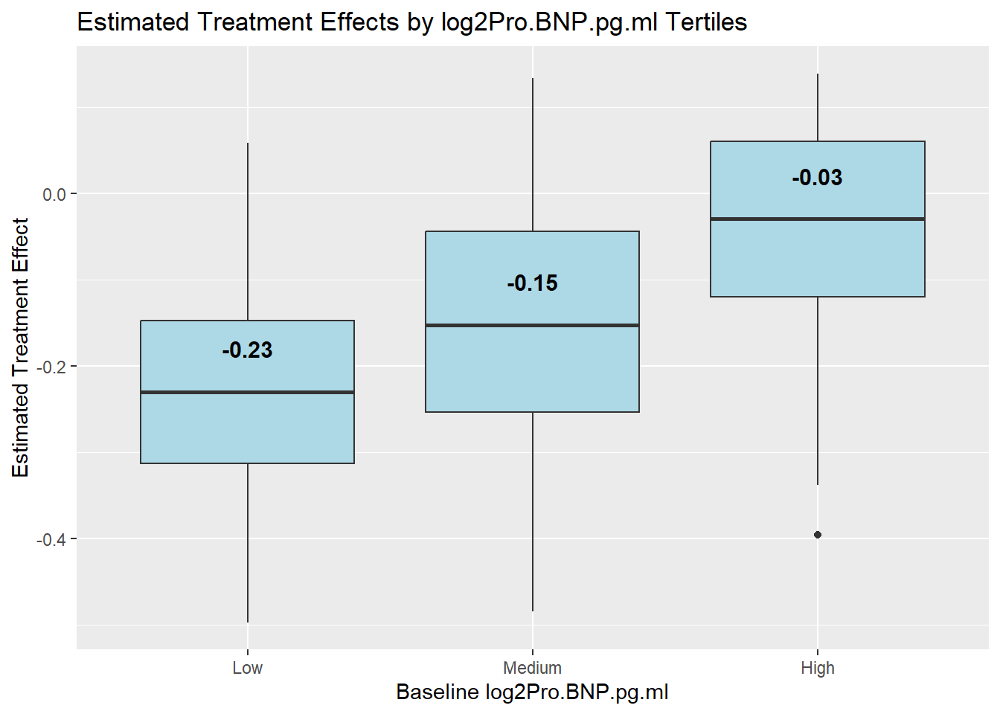
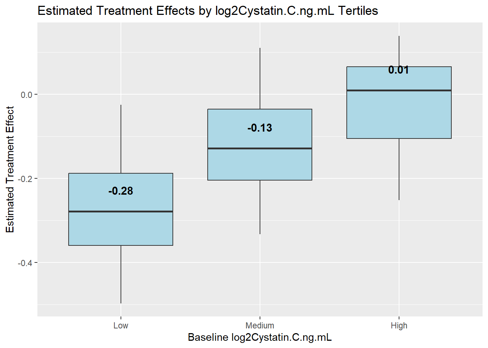
From the output it seems the top variables are: ProBNP, CystatinC, GDF15, and Creatinine. Note: Cystatine and Creatinine are both moderately correlated.
Results not Transformed to undone log2
##Added 7/16 - try different CART configurations
###Change in ProBNP ~ baseline ProBNP + baseline CystatinC
[1] 1.04238[1] -0.7582174[1] -0.8180989[1] 0.05988151[1] -1370.162[1] -1548.645[1] 178.4825
n= 178
node), split, n, deviance, yval
* denotes terminal node
1) root 178 586070000000 178.4825
2) Pro.BNP.pg.ml< 7726.5 151 494542800000 386.8887
4) Pro.BNP.pg.ml< 1055.5 49 160219600000 -461.0023
8) Pro.BNP.pg.ml>=491.4 26 86285730000 -640.9002 *
9) Pro.BNP.pg.ml< 491.4 23 73930490000 -353.6822 *
5) Pro.BNP.pg.ml>=1055.5 102 334284500000 688.1950 *
3) Pro.BNP.pg.ml>=7726.5 27 91085180000 3805.1040 * [,1] [,2] [,3] [,4]
[1,] "Pro.BNP.pg.ml" "197.706003605787" "633.455422013677" "-1054.049669006"
[2,] "Pro.BNP.pg.ml" "494.259923182008" "289.52422600808" "-48.4994633281589"
[3,] "Pro.BNP.pg.ml" "-429.93412989586" "142.745055794747" "-711.052806592292"
[4,] "<leaf>" "-591.229252882966" "186.340231200811" "-953.971911887255"
[5,] "<leaf>" "-373.569794639643" "190.429399152325" "-750.735661616162"
[6,] "<leaf>" "842.908663020535" "417.257336511534" "43.0576833543504"
[7,] "<leaf>" "3710.44064812706" "2340.20629563145" "-758.912"
[,5]
[1,] "1418.69398411263"
[2,] "1080.72307874924"
[3,] "-150.007543181818"
[4,] "-225.756284803922"
[5,] "-4.90813044871797"
[6,] "1679.28856540943"
[7,] "8464.78686079545" nodeassignments
4 5 6 7
26 23 102 27
0 1
84 94
4 5 6 7
0 16 10 43 15
1 10 13 59 12
1 2 3 5 10 20 40 60 80 100 120 160 200 240 <NA>
Furosemide 1 0 1 0 2 15 45 1 17 0 2 10 0 2 6
Torsemide 0 1 0 1 8 27 18 0 10 2 2 2 2 0 3
<NA> 0 0 0 0 0 0 0 0 0 0 0 0 0 0 0
1 2 3 5 10 20 40 60 80 100 120 160 200 240 <NA>
0 0 1 0 1 3 18 36 1 17 0 1 5 1 0 0
1 1 0 1 0 7 24 27 0 10 2 3 7 1 2 9
<NA> 0 0 0 0 0 0 0 0 0 0 0 0 0 0 0
1 2 3 5 10 20 40 60 80 100 120 160 200 240 <NA>
4 0 0 1 0 2 5 14 0 2 0 0 1 0 0 1
5 0 0 0 0 1 7 9 0 1 0 2 2 0 0 1
6 1 1 0 0 5 27 33 1 13 2 2 7 2 2 6
7 0 0 0 1 2 3 7 0 11 0 0 2 0 0 1
<NA> 0 0 0 0 0 0 0 0 0 0 0 0 0 0 0`summarise()` has grouped output by 'nodeassignments'. You can override using
the `.groups` argument.# A tibble: 8 × 3
# Groups: nodeassignments [4]
nodeassignments treatment_label mean_value
<int> <fct> <dbl>
1 4 Furosemide 48.2
2 4 Torsemide 28
3 5 Furosemide 60
4 5 Torsemide 45.8
5 6 Furosemide 62.0
6 6 Torsemide 47.8
7 7 Furosemide 76
8 7 Torsemide 50.3
4 5 6 7
Furosemide 16 11 65 10
Torsemide 10 12 37 17
0 1
84 94
4 5 6 7
0 16 10 43 15
1 10 13 59 12
0 1
N 0 92
Y 0 2
4 5 6 7
N 10 13 58 11
Y 0 0 1 1
0 1
10 0 1
18 0 1
21 0 1
43 0 1
50 0 1
60 0 1
66 0 1
67 0 1
72 0 1
80 0 1
82 0 1
84 0 1
86 0 1
88 0 1
90 0 2
94 0 1
98 0 1
114 0 1
119 0 1
128 0 1
141 0 1
155 0 1
156 0 1
184 0 1
199 0 1
216 0 1
221 0 1
239 0 1
241 0 1
243 0 1
245 0 1
261 0 1
264 0 1
291 0 1
347 0 1
352 0 1
FALSE TRUE
0 84 0
1 57 37
4 5 6 7
FALSE 21 18 78 24
TRUE 5 5 24 3[1] "node" "4"
[1] -354
[1] 287
[1] -641
[1] "node" "5"
[1] 169
[1] 523
[1] -354
[1] "node" "6"
[1] -423
[1] -1111
[1] 688
[1] "node" "7"
[1] -5122
[1] -8927
[1] 3805[1] "node" "4"
[1] 6
[1] 10
[1] 51.42857
[1] 35.7033
[1] 25
[1] 13.09307
[1] 0.4861111
[1] "node" "5"
[1] 12
[1] 13
[1] 60
[1] 46.18802
[1] 45.83333
[1] 46.01548
[1] 0.7638889
[1] "node" "6"
[1] 50
[1] 59
[1] 64.5614
[1] 53.82081
[1] 47.77143
[1] 51.68632
[1] 0.7399379
[1] "node" "7"
[1] 11
[1] 12
[1] 75.55556
[1] 50.77182
[1] 50.3125
[1] 31.96189
[1] 0.6659007[1] 6[1] 10 drug group dose
1 Furosemide NTproBNP<1056 55.00000
2 Torsemide NTproBNP<1056 37.50000
3 Furosemide NTproBNP>=1056 66.06061
4 Torsemide NTproBNP>=1056 48.56863[1] 1.466667[1] 1.36015
Call:
lm(formula = log_dose ~ drug * group, data = dftemp)
Residuals:
Min 1Q Median 3Q Max
-2.7858 -0.4832 -0.2346 0.4585 1.8194
Coefficients:
Estimate Std. Error t value Pr(>|t|)
(Intercept) 3.82130 0.16056 23.800 <2e-16 ***
drugTorsemide -0.49338 0.23814 -2.072 0.0399 *
groupNTproBNP>=1056 0.10220 0.18749 0.545 0.5865
drugTorsemide:groupNTproBNP>=1056 0.04879 0.27967 0.174 0.8617
---
Signif. codes: 0 '***' 0.001 '**' 0.01 '*' 0.05 '.' 0.1 ' ' 1
Residual standard error: 0.7866 on 157 degrees of freedom
Multiple R-squared: 0.08398, Adjusted R-squared: 0.06647
F-statistic: 4.798 on 3 and 157 DF, p-value: 0.003169
n= 178
node), split, n, deviance, yval
* denotes terminal node
1) root 178 586070000000 178.4825
2) Pro.BNP.pg.ml< 7726.5 151 494542800000 386.8887
4) Pro.BNP.pg.ml< 1055.5 49 160219600000 -461.0023
8) Pro.BNP.pg.ml>=491.4 26 86285730000 -640.9002 *
9) Pro.BNP.pg.ml< 491.4 23 73930490000 -353.6822 *
5) Pro.BNP.pg.ml>=1055.5 102 334284500000 688.1950
10) Creatinine.mg.dL< 1.115 23 76892650000 -81.5929 *
11) Creatinine.mg.dL>=1.115 79 257370000000 981.0049 *
3) Pro.BNP.pg.ml>=7726.5 27 91085180000 3805.1040 * [,1] [,2] [,3]
[1,] "Pro.BNP.pg.ml" "197.706003605787" "633.455422013677"
[2,] "Pro.BNP.pg.ml" "494.259923182008" "289.52422600808"
[3,] "Pro.BNP.pg.ml" "-429.93412989586" "142.745055794747"
[4,] "<leaf>" "-591.229252882966" "186.340231200811"
[5,] "<leaf>" "-373.569794639643" "190.429399152325"
[6,] "Creatinine.mg.dL" "842.908663020535" "417.257336511534"
[7,] "<leaf>" "28.8612105019132" "712.141553225225"
[8,] "<leaf>" "1143.07274122313" "499.943145167258"
[9,] "<leaf>" "3710.44064812706" "2340.20629563145"
[,4] [,5]
[1,] "-1054.049669006" "1418.69398411263"
[2,] "-48.4994633281589" "1080.72307874924"
[3,] "-711.052806592292" "-150.007543181818"
[4,] "-953.971911887255" "-225.756284803922"
[5,] "-750.735661616162" "-4.90813044871797"
[6,] "43.0576833543504" "1679.28856540943"
[7,] "-1337.23578409091" "1455.50734415584"
[8,] "191.598862755503" "2140.74446924749"
[9,] "-758.912" "8464.78686079545" nodeassignments
4 5 7 8 9
26 23 23 79 27
0 1
84 94
4 5 7 8 9
0 16 10 7 36 15
1 10 13 16 43 12
1 2 3 5 10 20 40 60 80 100 120 160 200 240 <NA>
Furosemide 1 0 1 0 2 15 45 1 17 0 2 10 0 2 6
Torsemide 0 1 0 1 8 27 18 0 10 2 2 2 2 0 3
<NA> 0 0 0 0 0 0 0 0 0 0 0 0 0 0 0
1 2 3 5 10 20 40 60 80 100 120 160 200 240 <NA>
0 0 1 0 1 3 18 36 1 17 0 1 5 1 0 0
1 1 0 1 0 7 24 27 0 10 2 3 7 1 2 9
<NA> 0 0 0 0 0 0 0 0 0 0 0 0 0 0 0
1 2 3 5 10 20 40 60 80 100 120 160 200 240 <NA>
4 0 0 1 0 2 5 14 0 2 0 0 1 0 0 1
5 0 0 0 0 1 7 9 0 1 0 2 2 0 0 1
7 1 0 0 0 0 10 6 0 4 1 0 0 0 0 1
8 0 1 0 0 5 17 27 1 9 1 2 7 2 2 5
9 0 0 0 1 2 3 7 0 11 0 0 2 0 0 1
<NA> 0 0 0 0 0 0 0 0 0 0 0 0 0 0 0`summarise()` has grouped output by 'nodeassignments'. You can override using
the `.groups` argument.# A tibble: 10 × 3
# Groups: nodeassignments [5]
nodeassignments treatment_label mean_value
<int> <fct> <dbl>
1 4 Furosemide 48.2
2 4 Torsemide 28
3 5 Furosemide 60
4 5 Torsemide 45.8
5 7 Furosemide 40.1
6 7 Torsemide 37.8
7 8 Furosemide 67.9
8 8 Torsemide 51.2
9 9 Furosemide 76
10 9 Torsemide 50.3
4 5 7 8 9
Furosemide 16 11 13 52 10
Torsemide 10 12 10 27 17
0 1
84 94
4 5 7 8 9
0 16 10 7 36 15
1 10 13 16 43 12
0 1
N 0 92
Y 0 2
4 5 7 8 9
N 10 13 15 43 11
Y 0 0 1 0 1
0 1
10 0 1
18 0 1
21 0 1
43 0 1
50 0 1
60 0 1
66 0 1
67 0 1
72 0 1
80 0 1
82 0 1
84 0 1
86 0 1
88 0 1
90 0 2
94 0 1
98 0 1
114 0 1
119 0 1
128 0 1
141 0 1
155 0 1
156 0 1
184 0 1
199 0 1
216 0 1
221 0 1
239 0 1
241 0 1
243 0 1
245 0 1
261 0 1
264 0 1
291 0 1
347 0 1
352 0 1
FALSE TRUE
0 84 0
1 57 37
4 5 7 8 9
FALSE 21 18 19 59 24
TRUE 5 5 4 20 3[1] "node" "4"
[1] -354
[1] 287
[1] -641
[1] "node" "5"
[1] 169
[1] 523
[1] -354
[1] "node" "7"
[1] -1205
[1] -1123
[1] -82
[1] "node" "8"
[1] -127
[1] -1108
[1] 981
[1] "node" "9"
[1] -5122
[1] -8927
[1] 3805[1] "node" "4"
[1] 6
[1] 10
[1] 51.42857
[1] 35.7033
[1] 25
[1] 13.09307
[1] "node" "5"
[1] 12
[1] 13
[1] 60
[1] 46.18802
[1] 45.83333
[1] 46.01548
[1] "node" "7"
[1] 14
[1] 16
[1] 43.33333
[1] 23.86833
[1] 37.77778
[1] 30.73181
[1] "node" "8"
[1] 36
[1] 43
[1] 70.22222
[1] 58.21156
[1] 51.23077
[1] 57.29384
[1] "node" "9"
[1] 11
[1] 12
[1] 75.55556
[1] 50.77182
[1] 50.3125
[1] 31.96189[1] 6[1] 10
Call:
lm(formula = log_dose ~ treatment_label * nodeassignments, data = dftemp)
Residuals:
Min 1Q Median 3Q Max
-3.3518 -0.4327 -0.1792 0.4852 1.8699
Coefficients:
Estimate Std. Error t value Pr(>|t|)
(Intercept) 3.60861 0.21956 16.436 <2e-16
treatment_labelTorsemide -0.40494 0.34715 -1.166 0.245
nodeassignments5 0.25944 0.34715 0.747 0.456
nodeassignments7 -0.25681 0.32222 -0.797 0.427
nodeassignments8 0.31622 0.25154 1.257 0.211
nodeassignments9 0.56547 0.34715 1.629 0.105
treatment_labelTorsemide:nodeassignments5 0.02850 0.50307 0.057 0.955
treatment_labelTorsemide:nodeassignments7 0.45875 0.50644 0.906 0.366
treatment_labelTorsemide:nodeassignments8 -0.09151 0.40421 -0.226 0.821
treatment_labelTorsemide:nodeassignments9 -0.16691 0.48787 -0.342 0.733
(Intercept) ***
treatment_labelTorsemide
nodeassignments5
nodeassignments7
nodeassignments8
nodeassignments9
treatment_labelTorsemide:nodeassignments5
treatment_labelTorsemide:nodeassignments7
treatment_labelTorsemide:nodeassignments8
treatment_labelTorsemide:nodeassignments9
---
Signif. codes: 0 '***' 0.001 '**' 0.01 '*' 0.05 '.' 0.1 ' ' 1
Residual standard error: 0.8503 on 159 degrees of freedom
Multiple R-squared: 0.0957, Adjusted R-squared: 0.04451
F-statistic: 1.87 on 9 and 159 DF, p-value: 0.06008Analysis of Variance Table
Model 1: log_dose ~ treatment_label + nodeassignments
Model 2: log_dose ~ treatment_label * nodeassignments
Res.Df RSS Df Sum of Sq F Pr(>F)
1 163 116.41
2 159 114.97 4 1.4363 0.4966 0.7383Now do trees for <1000 NTproBNP on follow up
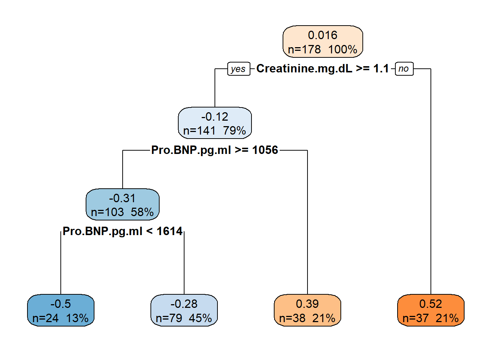
n= 178
node), split, n, deviance, yval
* denotes terminal node
1) root 178 1769.1090 0.01625693
2) Creatinine.mg.dL>=1.115 141 1389.7850 -0.11766850
4) Pro.BNP.pg.ml>=1055.5 103 1006.7980 -0.31449650
8) Pro.BNP.pg.ml< 1613.5 24 219.8999 -0.49904970 *
9) Pro.BNP.pg.ml>=1613.5 79 785.1511 -0.28259220 *
5) Pro.BNP.pg.ml< 1055.5 38 365.9002 0.38817320 *
3) Creatinine.mg.dL< 1.115 37 364.9622 0.51921020 * [,1] [,2] [,3]
[1,] "Creatinine.mg.dL" "-0.00311605829022356" "0.0753575035301631"
[2,] "Pro.BNP.pg.ml" "-0.125755266462985" "0.0838847576022408"
[3,] "Pro.BNP.pg.ml" "-0.326187878370021" "0.0809595224516092"
[4,] "<leaf>" "-0.499527611998781" "0.184308995655287"
[5,] "<leaf>" "-0.298590668622298" "0.0827713751492121"
[6,] "<leaf>" "0.382609169043443" "0.10949955322262"
[7,] "<leaf>" "0.48012058422401" "0.146001156406172"
[,4] [,5]
[1,] "-0.149649291069074" "0.140609696031523"
[2,] "-0.289837398373984" "0.0413004001372241"
[3,] "-0.484881116601989" "-0.165800557595539"
[4,] "-0.842424242424242" "-0.116634615384616"
[5,] "-0.457575478821845" "-0.133333333333333"
[6,] "0.173913043478261" "0.6"
[7,] "0.176190476190476" "0.75" nodeassignments
4 5 6 7
24 79 38 37
0 1
84 94
4 5 6 7
0 11 39 17 17
1 13 40 21 20
2 5 10 20 40 60 80 100 120 160 200 240 320 <NA>
Furosemide 0 0 1 11 34 1 15 0 0 8 0 2 1 29
Torsemide 1 1 4 15 15 0 7 1 1 2 4 1 0 24
<NA> 0 0 0 0 0 0 0 0 0 0 0 0 0 0
2 5 10 20 40 60 80 100 120 160 200 240 320 <NA>
0 1 1 3 18 36 1 17 0 1 5 1 0 0 0
1 0 0 2 8 13 0 5 1 0 5 3 3 1 53
<NA> 0 0 0 0 0 0 0 0 0 0 0 0 0 0
2 5 10 20 40 60 80 100 120 160 200 240 320 <NA>
4 1 0 1 3 6 0 2 0 0 0 1 1 1 8
5 0 1 2 8 19 1 14 1 1 7 2 1 0 22
6 0 0 1 7 15 0 0 0 0 2 0 1 0 12
7 0 0 1 8 9 0 6 0 0 1 1 0 0 11
<NA> 0 0 0 0 0 0 0 0 0 0 0 0 0 0`summarise()` has grouped output by 'nodeassignments'. You can override using
the `.groups` argument.# A tibble: 8 × 3
# Groups: nodeassignments [4]
nodeassignments treatment_label mean_value
<int> <fct> <dbl>
1 4 Furosemide 110
2 4 Torsemide 44
3 5 Furosemide 67.4
4 5 Torsemide 78.9
5 6 Furosemide 57.3
6 6 Torsemide 40.9
7 7 Furosemide 56.2
8 7 Torsemide 47
4 5 6 7
Furosemide 12 47 21 22
Torsemide 12 32 17 15
0 1
84 94
4 5 6 7
0 11 39 17 17
1 13 40 21 20
0 1
N 0 92
Y 0 2
4 5 6 7
N 13 39 21 19
Y 0 1 0 1
0 1
10 0 1
18 0 1
21 0 1
43 0 1
50 0 1
60 0 1
66 0 1
67 0 1
72 0 1
80 0 1
82 0 1
84 0 1
86 0 1
88 0 1
90 0 2
94 0 1
98 0 1
114 0 1
119 0 1
128 0 1
141 0 1
155 0 1
156 0 1
184 0 1
199 0 1
216 0 1
221 0 1
239 0 1
241 0 1
243 0 1
245 0 1
261 0 1
264 0 1
291 0 1
347 0 1
352 0 1
FALSE TRUE
0 84 0
1 57 37
4 5 6 7
FALSE 16 64 28 33
TRUE 8 15 10 4[1] "node" "4"
[1] 0.26
[1] 0.759
[1] -0.499
[1] "node" "5"
[1] 0.058
[1] 0.34
[1] -0.283
[1] "node" "6"
[1] 1
[1] 0.612
[1] 0.388
[1] "node" "7"
[1] 0.804
[1] 0.285
[1] 0.519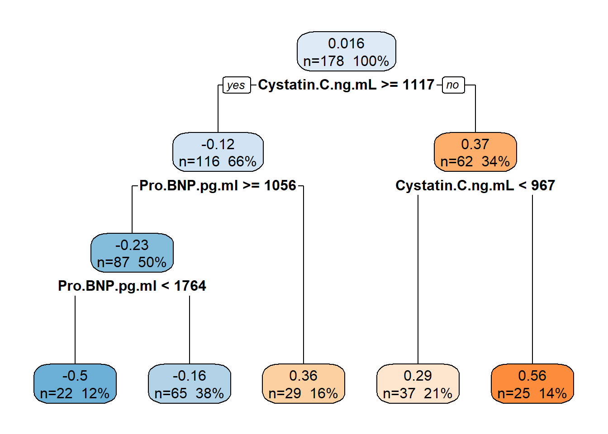
n= 178
node), split, n, deviance, yval
* denotes terminal node
1) root 178 1769.1090 0.01625693
2) Cystatin.C.ng.mL>=1117.115 116 1161.1200 -0.12231310
4) Pro.BNP.pg.ml>=1055.5 87 874.4798 -0.23051170
8) Pro.BNP.pg.ml< 1763.5 22 199.3818 -0.49557830 *
9) Pro.BNP.pg.ml>=1763.5 65 673.0749 -0.15875100 *
5) Pro.BNP.pg.ml< 1055.5 29 278.3966 0.36202230 *
3) Cystatin.C.ng.mL< 1117.115 62 595.9938 0.37130700
6) Cystatin.C.ng.mL< 967.4175 37 359.4965 0.29018720 *
7) Cystatin.C.ng.mL>=967.4175 25 234.2572 0.55694420 * [,1] [,2] [,3]
[1,] "Cystatin.C.ng.mL" "-0.00311605829022356" "0.0753575035301631"
[2,] "Pro.BNP.pg.ml" "-0.140810979875642" "0.0879121810967709"
[3,] "Pro.BNP.pg.ml" "-0.2613555376113" "0.082234739029485"
[4,] "<leaf>" "-0.544632673204524" "0.187417003251332"
[5,] "<leaf>" "-0.173582128877501" "0.0783765424936842"
[6,] "<leaf>" "0.355079488456087" "0.119045978501016"
[7,] "Cystatin.C.ng.mL" "0.362965499514465" "0.108961782114336"
[8,] "<leaf>" "0.29254225768468" "0.132449232924287"
[9,] "<leaf>" "0.530521527210653" "0.176145950659718"
[,4] [,5]
[1,] "-0.149649291069074" "0.140609696031523"
[2,] "-0.3125" "0.0319122491764"
[3,] "-0.423083464154893" "-0.10041204156395"
[4,] "-0.888888888888889" "-0.15177895021645"
[5,] "-0.333333333333333" "-0.0268178744852173"
[6,] "0.133333333333333" "0.592777777777775"
[7,] "0.143938923979247" "0.571428571428571"
[8,] "0.0128205128205128" "0.529803594016389"
[9,] "0.166666666666667" "0.85" Get the event rates in each node (need to bring back in rehosp and death indicators), and treatment-specific outcomes
nodeassignments
4 5 6 8 9
22 65 29 37 25
0 1
84 94
4 5 6 8 9
0 8 31 15 21 9
1 14 34 14 16 16
2 5 10 20 40 60 80 100 120 160 200 240 320 <NA>
Furosemide 0 0 1 11 34 1 15 0 0 8 0 2 1 29
Torsemide 1 1 4 15 15 0 7 1 1 2 4 1 0 24
<NA> 0 0 0 0 0 0 0 0 0 0 0 0 0 0
2 5 10 20 40 60 80 100 120 160 200 240 320 <NA>
0 1 1 3 18 36 1 17 0 1 5 1 0 0 0
1 0 0 2 8 13 0 5 1 0 5 3 3 1 53
<NA> 0 0 0 0 0 0 0 0 0 0 0 0 0 0
2 5 10 20 40 60 80 100 120 160 200 240 320 <NA>
4 0 0 1 2 5 0 1 0 0 2 0 0 1 10
5 0 1 1 6 14 0 13 1 1 5 2 1 0 20
6 0 0 1 6 11 0 1 0 0 2 0 0 0 8
8 0 0 1 9 13 1 4 0 0 0 1 2 0 6
9 1 0 1 3 6 0 3 0 0 1 1 0 0 9
<NA> 0 0 0 0 0 0 0 0 0 0 0 0 0 0`summarise()` has grouped output by 'nodeassignments'. You can override using
the `.groups` argument.# A tibble: 10 × 3
# Groups: nodeassignments [5]
nodeassignments treatment_label mean_value
<int> <fct> <dbl>
1 4 Furosemide 117.
2 4 Torsemide 30
3 5 Furosemide 71.3
4 5 Torsemide 79.8
5 6 Furosemide 50
6 6 Torsemide 41.1
7 8 Furosemide 59.1
8 8 Torsemide 51.2
9 9 Furosemide 63.8
10 9 Torsemide 50.2
4 5 6 8 9
Furosemide 11 34 17 26 14
Torsemide 11 31 12 11 11
0 1
84 94
4 5 6 8 9
0 8 31 15 21 9
1 14 34 14 16 16
0 1
N 0 92
Y 0 2
4 5 6 8 9
N 14 33 14 15 16
Y 0 1 0 1 0
0 1
10 0 1
18 0 1
21 0 1
43 0 1
50 0 1
60 0 1
66 0 1
67 0 1
72 0 1
80 0 1
82 0 1
84 0 1
86 0 1
88 0 1
90 0 2
94 0 1
98 0 1
114 0 1
119 0 1
128 0 1
141 0 1
155 0 1
156 0 1
184 0 1
199 0 1
216 0 1
221 0 1
239 0 1
241 0 1
243 0 1
245 0 1
261 0 1
264 0 1
291 0 1
347 0 1
352 0 1
FALSE TRUE
0 84 0
1 57 37
4 5 6 8 9
FALSE 13 54 22 33 19
TRUE 9 11 7 4 6[1] "node" "4"
[1] 0.195
[1] 0.691
[1] -0.496
[1] "node" "5"
[1] 0.028
[1] 0.187
[1] -0.159
[1] "node" "6"
[1] 1
[1] 0.638
[1] 0.362
[1] "node" "8"
[1] 0.917
[1] 0.627
[1] 0.29
[1] "node" "9"
[1] 0.824
[1] 0.267
[1] 0.557 Drug Q1 Median Q3
Q1 Torsemide -1423.0 -404.0 181.4
Q11 Furosemide -2290.7 -531.3 325.1
Design-based KruskalWallis test
data: proBNP_change ~ as.factor(trt_num)
t = 0.3372, df = 176, p-value = 0.7364
alternative hypothesis: true difference in mean rank score is not equal to 0
sample estimates:
difference in mean rank score
0.01493461 [1] 0.2518053# A tibble: 2 × 3
treatment_label N_unweighted prop_IP_weighted
<fct> <int> <dbl>
1 Furosemide 102 0.432
2 Torsemide 76 0.448Warning in eval(family$initialize): non-integer #successes in a binomial glm!
Call:
glm(formula = followup_proBNP_under1000 ~ treatment_label, family = binomial(link = "logit"),
data = df_explanatory_IPWs, weights = combined_ipw)
Coefficients:
Estimate Std. Error z value Pr(>|z|)
(Intercept) -0.27487 0.12730 -2.159 0.0308 *
treatment_labelTorsemide 0.06599 0.19347 0.341 0.7330
---
Signif. codes: 0 '***' 0.001 '**' 0.01 '*' 0.05 '.' 0.1 ' ' 1
(Dispersion parameter for binomial family taken to be 1)
Null deviance: 606.14 on 177 degrees of freedom
Residual deviance: 606.03 on 176 degrees of freedom
AIC: 593.17
Number of Fisher Scoring iterations: 4